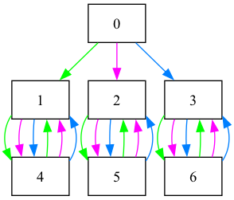

Finitely presented semigroups and monoids
This section provides information about how to compute with a finitely presented semigroup or monoid using libsemigroups_pybind11.
Warning
Almost every question about finitely presented semigroups and monoids is undecidable in general. It is easy to find examples where the algorithms implemented in libsemigroups_pybind11 will run forever, so some caution is required!
Presentations
The algorithms in libsemigroups_pybind11 for computing with finitely presented semigroups and monoids all accept a Presentation object as (at least part of the) input.
You can create a presentation using strings by doing:
from libsemigroups_pybind11 import Presentation, presentation
p = Presentation("ab") # a presentation with alphabet {a, b}
p.alphabet() # returns "ab"
p.rules # returns the empty list
You can add rules to the presentation p one by one:
presentation.add_rule(p, "aba", "bbba") # add aba = bbba
presentation.add_rule(p, "babba", "a" * 10)
p.rules # returns ['aba', 'bbba', 'babba', 'aaaaaaaaaa']
The relations (or rules) in the presentation are stored as a list of strings, not a list of pairs of strings as you might expect.
If you make a mistake adding rules one by one, then you'll get an error:
presentation.add_rule(p, "aba", "bbbc")
...
LibsemigroupsError: invalid letter 'c', valid letters are "ab"
Or you can define a presentation without giving the alphabet first:
from libsemigroups_pybind11 import Presentation, presentation
# no alphabet, but will use lists of integers as words
p = Presentation(word=list[int])
p.rules = [[0, 1, 0], [1, 1, 1, 0], [1, 0, 1, 1, 0], [0] * 10]
p.alphabet_from_rules()
p.alphabet() # returns [0, 1]
If you want a monoid presentation, then do:
In this case the empty string can be used in rules too.
Note
libsemigroups_pybind11 can easily handle presentations with tens of millions of rules of total length into the hundreds of millions.
Manipulating presentations
There are many functions in libsemigroups_pybind11 for manipulating presentations. In this section we will describe a couple of these. For more details please consult the Presentation helpers page in the documentation.
There are a number of functions for defining rules of a particular type. You can add rules indicating group inverses:
from libsemigroups_pybind11 import Presentation, presentation
p = Presentation(word=str).alphabet("abAB")
p.contains_empty_word(True)
presentation.add_inverse_rules(p, "ABab")
p.rules # ['aA', '', 'bB', '', 'Aa', '', 'Bb', '']
In this example we have defined a (monoid) presentation with generator \(\{a, b, A, B\}\) and we are following the convention that \(A\) is the inverse of \(a\), and \(B\) is the inverse of \(b\) and vice versa. The function presentation.add_inverse_rules is helpful if you want to define a group by a monoid presentation.
You can change the alphabet of a presentation:
from libsemigroups_pybind11 import Presentation, presentation
p = Presentation(word=str).alphabet("a")
p.contains_empty_word(True)
presentation.add_rule(p, "a" * 10, "")
presentation.change_alphabet(p, "x")
p.rules # ['xxxxxxxxxx', '']
You can remove trivial rules, remove duplicate rules, remove redundant generators, replace a word with a new generator, sort the rules and many more:
from libsemigroups_pybind11 import Presentation, presentation
p = Presentation(word=str).alphabet("ab")
p.contains_empty_word(True)
p.rules = ["a" * 10, "", "a" * 10, "", "aa", "aa", "b", "aa"]
presentation.remove_trivial_rules(p)
p.rules # ['aaaaaaaaaa', '', 'aaaaaaaaaa', '', 'b', 'aa']
presentation.remove_duplicate_rules(p)
p.rules # ['aaaaaaaaaa', '', 'b', 'aa']
presentation.remove_redundant_generators(p)
p.alphabet() # returns "a"
p.rules # returns ['aaaaaaaaaa', '']
presentation.replace_word_with_new_generator(p, "aaaa") # returns 'b'
p.rules # ['', 'bbaa', 'b', 'aaaa']
presentation.sort_each_rule(p)
p.rules # ['bbaa', '', 'aaaa', 'b']
Standard examples
You don't necessarily have to input your favourite semigroup presentation by hand, there are 40+ standard examples already in libsemigroups_pybind11. For example, for Iwahori and Iwahori's presentation for the full transformation monoid of degree 7:
from libsemigroups_pybind11.presentation import examples
examples.full_transformation_monoid_II74(7)
# returns <monoid presentation with 7 letters, 3,144 rules, and length 69,656>
See Presentations for standard examples for details.
Finite or infinite?
You might want to know if a presentation defines a finite or an infinite monoid or semigroup.
One place to start is using is_obviously_infinite. This function performs linear time (in the size of the input presentation) checks that can sometimes tell you if a presentation defines an infinite semigroup. Since it's linear time, this does not trigger any potentially never ending algorithms.
from libsemigroups_pybind11 import Presentation, is_obviously_infinite
p = Presentation("byr")
p.rules = ["byr", "b", "yrb", "y"]
is_obviously_infinite(p) # returns True
p = Presentation("ab")
p.rules = ["a" * 10, "a", "b" * 7, "b" * 2]
is_obviously_infinite(p) # returns True
p = Presentation("byr")
p.rules = ["byr", "b", "yrb", "y", "rby", "r"]
is_obviously_infinite(p) # returns False
Todd-Coxeter
The algorithm libsemigroups_pybind11 implemented in the class
ToddCoxeter
can (sometimes!) show that a semigroup or monoid defined by a presentation is
finite, but it runs forever if the semigroup or monoid is infinite. So, it's a
bad idea to try to run the algorithm until it ends. Instead, functions like
run_for and run_until allow you to control how long the algorithm should run
for. A
ToddCoxeter object represents the congruence over a free semigroup or monoid generated by the relations in the input presentation.
from libsemigroups_pybind11 import Presentation, congruence_kind, ToddCoxeter
from datetime import timedelta
p = Presentation("byr").contains_empty_word(True)
p.rules = ["byr", "b", "yrb", "y", "rby", "r"]
tc = ToddCoxeter(congruence_kind.twosided, p)
# tc.number_of_classes() # BAD IDEA, might run forever!
tc.run_for(timedelta(seconds=1)) # GOOD IDEA, run for 1 second
tc.finished() # returns True, so we know p defined a finite monoid
tc.number_of_classes() # returns 7
A picture of the right Cayley graph can be produced from tc in the example
above by doing:
which produces:

Tip
If you know that a presentation defines a finite semigroup or monoid and it is not too big, then Todd-Coxeter will usually run faster than the other algorithms described below.
Knuth-Bendix
The algorithm in libsemigroups_pybind11 implemented in the class KnuthBendix can (sometimes!) show that a semigroup or monoid defined by a presentation is finite or infinite. It's also a bad idea to try to run the algorithm until it ends, since it can sometimes be slow, or run forever. KnuthBendix objects also represent congruences.
from libsemigroups_pybind11 import Presentation, congruence_kind, KnuthBendix
from datetime import timedelta
p = Presentation("byr").contains_empty_word(True)
p.rules = ["byr", "b", "yrb", "y", "rby", "r"]
kb = KnuthBendix(congruence_kind.twosided, p)
# kb.number_of_classes() # BAD IDEA, might run forever!
kb.run_for(timedelta(seconds=1)) # GOOD IDEA, run for 1 second
kb.finished() # returns True, so we know p defined a finite monoid
kb.number_of_classes() # returns 7
list(kb.active_rules())
# returns
# [('by', 'bb'),
# ('rr', 'rb'),
# ('rbb', 'r'),
# ('bbb', 'b'),
# ('br', 'bb'),
# ('yy', 'yb'),
# ('ry', 'rb'),
# ('ybb', 'y'),
# ('yr', 'yb')]
Here's a large finite example where Todd-Coxeter would take a long time:
from libsemigroups_pybind11 import KnuthBendix, congruence_kind
from libsemigroups_pybind11.presentation import examples
p = examples.symmetric_group_Moo97_a(12)
kb = KnuthBendix(congruence_kind.twosided, p)
kb.number_of_classes() # returns math.factorial(12) == 479_001_600
Here's an infinite example.
from libsemigroups_pybind11 import Presentation, presentation, congruence_kind, KnuthBendix
from datetime import timedelta
p = Presentation("BCA")
presentation.add_rule(p, "AABC", "ACBA")
kb = KnuthBendix(congruence_kind.twosided, p)
kb.number_of_classes() # returns +∞
Run everything at the same time
If you want to run some variants of Knuth-Bendix, Todd-Coxeter, and some further algorithms, such as determining the small overlap class of a finitely presented semigroup or monoid, then you can use a Congruence to do this. This class lacks the fine-grained control available in KnuthBendix and ToddCoxeter, but is sometimes more convenient.
from libsemigroups_pybind11 import Congruence, congruence_kind
from libsemigroups_pybind11.presentation import examples
p = examples.symmetric_group_Moo97_a(12)
c = Congruence(congruence_kind.twosided, p)
c.number_of_classes() # returns math.factorial(12) == 479_001_600
Non-isomorphism
In this section we show how to demonstrate that two semigroups or monoids defined by presentations are not isomorphic.
from libsemigroups_pybind11 import congruence_kind, ToddCoxeter
from libsemigroups_pybind11.presentation import examples
p = examples.symmetric_inverse_monoid_Shu60(4)
tc = ToddCoxeter(congruence_kind.twosided, p)
tc.number_of_classes() # returns 209
Let's check if the monoid defined by all but the last relation [[0, 3, 0, 3,
0], [0, 3, 0, 3]] in the presentation p defines the symmetric inverse monoid
on 4 points also. One way of doing this is to just remove the relation, and
check if the presentation defines a monoid of the same size. This sometimes
works, and it does here:
from libsemigroups_pybind11 import congruence_kind, ToddCoxeter
from libsemigroups_pybind11.presentation import examples
p = examples.symmetric_inverse_monoid_Shu60(4)
p.rules = p.rules[:-2]
tc = ToddCoxeter(congruence_kind.twosided, p)
tc.number_of_classes() # returns 384
so the last relation is not redundant!
Let's try again with the second to last relation [2, 3, 2, 0],
[0, 2, 3, 2]
from libsemigroups_pybind11 import congruence_kind, ToddCoxeter
from libsemigroups_pybind11.presentation import examples
p = examples.symmetric_inverse_monoid_Shu60(4)
p.rules = p.rules[:-4] + p.rules[-2:]
tc = ToddCoxeter(congruence_kind.twosided, p)
tc.number_of_classes() # returns 209
So the second to last relation is redundant. Let's try again with the relation
[3, 0, 3, 0], [0, 3, 0, 3] which is p.rules[18], p.rules[19]:
from libsemigroups_pybind11 import congruence_kind, ToddCoxeter
from libsemigroups_pybind11.presentation import examples
p = examples.symmetric_inverse_monoid_Shu60(4)
p.rules = p.rules[:18] + p.rules[20:]
tc = ToddCoxeter(congruence_kind.twosided, p)
tc.number_of_classes() # returns +∞
So [3, 0, 3, 0], [0, 3, 0, 3] is also not redundant. Let's try again with the
first rule [0, 0], [].
from libsemigroups_pybind11 import congruence_kind, ToddCoxeter
from libsemigroups_pybind11.presentation import examples
from datetime import timedelta
p = examples.symmetric_inverse_monoid_Shu60(4)
p.rules = p.rules[2:]
tc = ToddCoxeter(congruence_kind.twosided, p)
tc.run_for(timedelta(seconds=4))
tc.finished() # False
tc.number_of_nodes_active() # returns 2330320 on my computer
So this is inconclusive. Maybe it's infinite and Todd-Coxeter can't answer this question for us, so let's try Knuth-Bendix:
from libsemigroups_pybind11 import congruence_kind, KnuthBendix
from libsemigroups_pybind11.presentation import examples
from datetime import timedelta
p = examples.symmetric_inverse_monoid_Shu60(4)
p.rules = p.rules[2:]
kb = KnuthBendix(congruence_kind.twosided, p)
kb.run_for(timedelta(seconds=4))
kb.finished() # False
kb.number_of_active_rules() # returns 14699 on my computer
So this is inconclusive too, what do? The low-index congruence
algorithm
(similar to Sims' low index subgroup algorithm) can compute the numbers of
left/right, and 2-sided congruences on a finitely presented semigroup,
regardless of whether or not the semigroup is finite. This algorithm is
implemented in the
Sims1
class. The following computes the number of right congruences with up to 5
classes on the monoid defined by the presentation p:
from libsemigroups_pybind11 import Sims1
from libsemigroups_pybind11.presentation import examples
from datetime import timedelta
p = examples.symmetric_inverse_monoid_Shu60(4)
S = Sims1(p)
S.number_of_congruences(5) # returns 18
p.rules = p.rules[2:]
S.presentation(p)
S.number_of_congruences(5) # returns 26
This says that the symmetric inverse monoid has 18 right congruences with up to
5 classes, but the monoid defined by the presentation with the first relation
removed p.rules[2:] has 26 such congruences. So, these monoids are not
isomorphic, and so the first relation in p is not redundant.